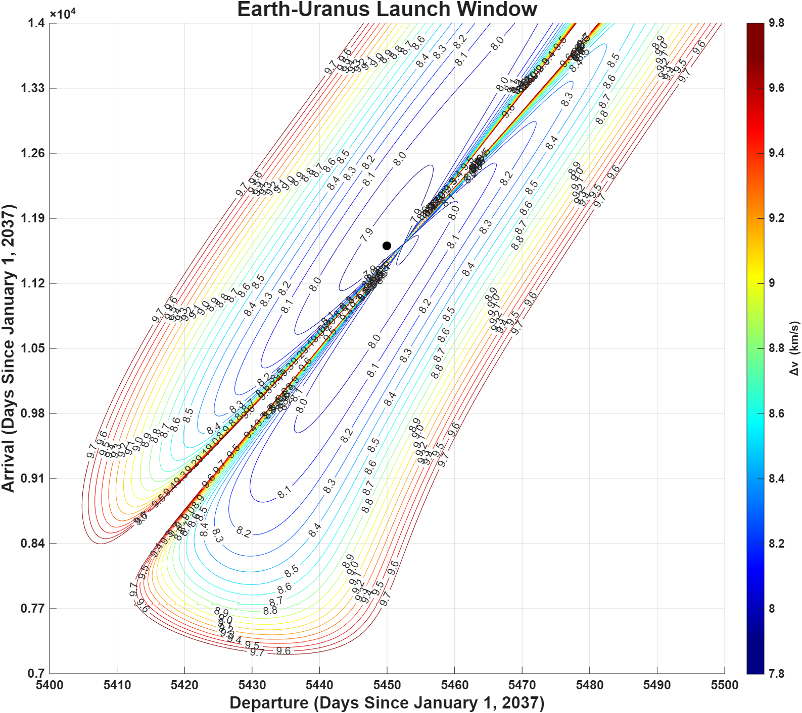

Astronautics Simulations
Computational astronautics projects involving orbital mechanics, trajectory analysis, porkchop plots, mission design trade studies, and numerical simulation.
Project Overview
My astronautics simulation projects focus on using computational tools to model orbital mechanics problems and mission design concepts. These projects helped me connect classroom theory to practical analysis by turning equations, assumptions, and mission constraints into simulations and visual results.
Examples of this work include trajectory studies, orbital transfer analysis, porkchop plots, and mission planning trade studies. These simulations strengthened my understanding of how spacecraft motion, transfer timing, and delta-v requirements influence mission design.

Porkchop plot generated to visualize trajectory trade space and compare departure and arrival timing options.
My Role
I developed and analyzed simulations to better understand orbital mechanics, transfer trajectories, and mission planning decisions. My work involved setting up the problem, defining assumptions, implementing the simulation, generating plots, and interpreting the engineering meaning of the results.
These projects helped me practice the type of computational analysis used in space mission design, including breaking down a large astronautics problem into inputs, equations, outputs, and visual results.
Technical Approach
Simulation Inputs
- Initial and final orbital conditions
- Departure and arrival timing assumptions
- Planetary or body parameters
- Time of flight ranges
- Mission constraints and simplifying assumptions
Simulation Outputs
- Trajectory plots
- Transfer timing comparisons
- Delta-v estimates
- Porkchop plot visualizations
- Mission design trade study results
Analysis Methods
Orbital Mechanics Concepts
- Two-body motion
- Transfer trajectories
- Time of flight analysis
- Delta-v comparison
- Mission geometry and launch window effects
Computational Methods
- Numerical simulation
- Parameter sweeps
- Plot generation and visualization
- Data interpretation
- Engineering assumption tracking
Skills Used and Developed
Technical Skills
- Orbital mechanics
- Trajectory analysis
- MATLAB and Python simulation
- Numerical methods
- Data visualization
- Mission design trade studies
Engineering Skills
- Problem formulation
- Assumption management
- Technical interpretation
- Model verification awareness
- Documentation of results
- Communicating complex analysis clearly
Selected Simulation Work
This section can be customized with specific simulation examples. You can add screenshots, plots, or short summaries from orbital transfer assignments, porkchop plot work, Lambert problem practice, or mission design studies.
Porkchop Plot Analysis
- Compared departure and arrival date combinations
- Visualized mission design trade space
- Studied how transfer timing affects mission feasibility
- Practiced interpreting contour plots for trajectory planning
Trajectory Simulation
- Modeled spacecraft motion using orbital mechanics assumptions
- Generated plots to evaluate trajectory behavior
- Connected numerical outputs to mission-level interpretation
- Practiced verification through checks on expected behavior
What I Learned
These simulations helped me understand that mission design is highly dependent on assumptions, timing, and visualization. A trajectory result is not just a number. It needs to be interpreted in the context of launch windows, transfer time, delta-v, and mission objectives.
I also learned the importance of presenting simulation results clearly. Plots, tables, and documented assumptions make it much easier to explain the technical value of a model and identify where the analysis could be improved.
Future Improvements
Future work could include adding a Lambert solver, expanding the simulations to include perturbations, improving the porkchop plot workflow, adding Monte Carlo analysis, and creating a more organized GitHub repository with reusable scripts, figures, and documentation.